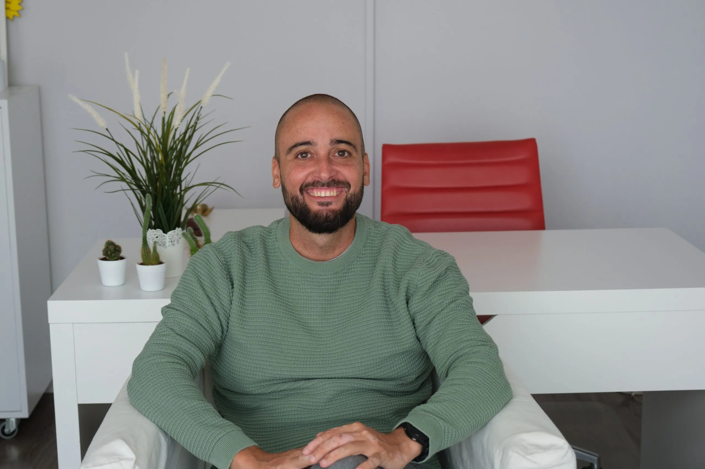

Ansiedad y preocupación
Anticipación constante, miedo, tensión o dificultad para detener pensamientos que se repiten.
Terapia individual · Sevilla y online
Un espacio confidencial para ordenar lo que sientes, comprender los patrones que hoy te bloquean y construir cambios adaptados a tu ritmo y a tu vida.
No necesitas tener claro qué decir antes de empezar.
Motivos de consulta
La terapia individual puede ayudarte cuando una emoción, una situación o una forma de relacionarte contigo empieza a ocupar demasiado espacio.
Anticipación constante, miedo, tensión o dificultad para detener pensamientos que se repiten.
Sensación de estar sosteniendo demasiado durante demasiado tiempo, sin espacio para recuperarte.
Crítica interna, inseguridad, culpa o la sensación persistente de que nunca haces suficiente.
Rupturas, duelos, decisiones o etapas nuevas que requieren tiempo para ser comprendidas e integradas.
Dificultad para expresar lo que necesitas, poner límites o construir vínculos más equilibrados.
Cuando sabes que algo no funciona, pero todavía no consigues identificar por dónde empezar.
Cómo trabajaremos
El proceso se adapta a cada persona, pero existe una dirección compartida que nos ayuda a entender dónde estás y hacia dónde quieres avanzar.
Exploramos tu situación, tu contexto y aquello que te gustaría cambiar, sin exigirte llegar con todas las respuestas.
Acordamos objetivos realistas para que el proceso responda a lo que realmente necesitas en este momento.
Comprendemos patrones y practicamos nuevas maneras de responder a pensamientos, emociones y situaciones.
Revisamos avances y reforzamos aquello que te ayuda a actuar con mayor autonomía y coherencia.
La primera sesión
La primera cita sirve para escuchar qué te trae a consulta, comprender tu contexto y resolver cualquier duda sobre la terapia. También podrás valorar si te sientes cómodo con mi forma de trabajar.
Ver citas disponibles
Tu psicólogo
Soy Miguel Ángel Roldán, psicólogo general sanitario colegiado AN07899. Trabajo desde un enfoque integrador y adapto las herramientas a la historia, los objetivos y el momento de cada persona.
Dudas habituales
Preguntar también forma parte de tomar una decisión con tranquilidad.
No. Muchas personas llegan con malestar o sensación de bloqueo sin saber explicarlo todavía. La primera parte del proceso sirve precisamente para comprenderlo.
Sí. Puedes realizar las sesiones presencialmente en Sevilla o conectarte online desde un espacio privado.
La sesión individual tiene una duración aproximada de 60 minutos.
La frecuencia se acuerda según tus necesidades, objetivos y disponibilidad. Podemos valorarla juntos durante la primera cita.
La primera sesión también sirve para que valores si te sientes cómodo y si la forma de trabajo encaja contigo.
Cuando estés preparado
Podemos empezar entendiendo juntos qué está ocurriendo y cuál puede ser el siguiente paso.